Assignment 6: Waves in three-dimensional solids and applications¶
The first assignment can be found here
Exercise 1 - Structure determination¶
A diffraction experiment with an unknown crystalline powder sample was performed using a tungsten X-ray tube. Tungsten has emission lines and , and the ratio of intensities of the emissions lines is .
-
Explain how X-ray tubes produce X-rays, and describe how one would go about performing a powder diffraction experiment.
This is a more detailed response than I would expect, but for a complete picutre: in an X-ray tube, electrons are emitted from the filament and accelerated towards the anode, and two forms of radiation are produced from the interaction between the electrons and the anode. The first kind is Bremsstrahlung radiation, which will be emitted as the electron is decelerated by the atomic nuclei of the anode. The emission spectrum is continuous, with the approximate shape described by Kramers' Law:
where the cutoff wavelength, is given by the Duane-Hunt law:
The key point relating to the distribution is that with an increased acceleration voltage, the Bremsstrahlung radiation intensity increases and shifts towards higher frequencies.
The second kind of radiation is the characteristic X-ray emission, which occurs when a high-lying electron decays to a (vacant) lower energy level, resulting in the emission of a photon. The bombardment of the anode by energetic electrons results in the emission of inner-shell electrons from the atoms in the anode. Such vacancies are filled by the decay of outer-shell electrons and due to the unique energy structure of each element, each atom emits photons of distinct frequencies, completely analogous to atomic optical spectra.
The combination of these effects means that the expected emission spectrum would expect a smooth, continuous spectrum punctuated by emissions of characteristic X-rays.
Powder diffraction experiments are performed by placing a crystalline sample in powdered form in an X-ray beamline and collecting the scattered radiation from the sample. The diffraction pattern will by design form rings rather than spots, as every possible crystal orientation is assured by using a powder rather than a monocrystalline sample.
-
A plot of the data measured from the experiment when emission was used is shown below: 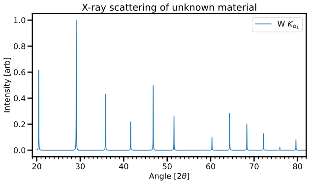
-
Following the recipe discussed in class, produce a table with columns of angle, plane separation, ratio of the square of first plane separation to plane separation, , , and (assuming some kind of cubic lattice)
This should be relatively straightforward, given the example we did in class was trickier and the code used to do the analysis was freely distributed. The peaks as found from the data are shown below:

Peak finding code
peaks, _ = find_peaks(data['Intensity']) fig, ax = plt.subplots() ax.plot(data['Angle'], data['Intensity']/maxamp, label = r'W $K_{\alpha_1}$', color = 'C0') ax.plot(data['Angle'][peaks], data['Intensity'][peaks]/maxamp, "x", color = 'C1', label = 'Peaks') ax.set_xlabel(r'Angle [2$\theta$]') ax.set_xlim((19,82)) ax.set_ylabel('Intensity [arb]') ax.set_title('X-ray scattering of unknown material'); plt.legend() loc = matplotlib.ticker.MultipleLocator(1) ax.xaxis.set_minor_locator(loc) ax.tick_params(which='minor') if True: plt.savefig('A-6-peaks.svg', facecolor='white', transparent=False, bbox_inches='tight') plt.show()from which the following data table can be constructed:
Peak number 1 20.461 58.84 1.00 1 [1, 0, 0] 58.84 2 29.086 41.61 1.99 2 [1, 1, 0] 58.84 3 35.828 33.97 2.99 3 [1, 1, 1] 58.84 4 41.609 29.42 3.99 4 [2, 0, 0] 58.84 5 46.788 26.32 4.99 5 [2, 1, 0] 58.84 6 51.567 24.02 5.99 6 [2, 1, 1] 58.84 7 60.302 20.80 7.99 8 [2, 2, 0] 58.84 8 64.380 19.61 8.99 9 [2, 2, 1] 58.84 9 68.327 18.61 9.99 10 [3, 0, 0] 58.84 10 72.164 17.74 10.99 11 [3, 1, 0] 58.84 11 75.920 16.98 11.99 12 [3, 1, 1] 58.84 12 79.617 16.32 12.99 13 [2, 2, 2] 58.84 The difficulty of finding the multiplier to make all values of an integer is not present in this example, so the process should be straightforward to find
-
Use the table above to determine the lattice structure of the crystal
The lattice is a simple cubic lattice, which can be inferred by the calculated values of N above and the selection rule for simple cubic lattices ( is all integers excluding ), and this is directly visible from the diffraction data: peak 7 is clearly missing.
-
-
The basis of the lattice is given by and and where and are different atomic species, and .
-
Draw the unit cell for the crystal using your lattice and the basis specified above.
Below is the crystal structure (many unit cells) and can be well described as a simple cubic with a neat prism inside. The material is , which is the most gorgeous shade of pink, and is a neat material for making hot cathode emitters (electron sources).

-
Explain how the intensity of the peaks could be used to determine , and obtain an expression for the ratio of the first two diffraction peaks. Note: You do not need to solve this equation for , just arrive at something that could be used to calculate .
The intensity of the peaks is related to the square (well, modulus squared) of the structure factor . As we have been using it in class, the structure factor is
which in reality means that one must compute
This is not so difficult, but can be a bit tedious depending on the basis of the unit cell. Given we are looking at the intensities of the first two peaks, this means we will need to look at :
and :
One could then look at the ratio and try and solve for , but that will be a mess, so one should solve it numerically. The real value is , although I am not sure exactly what the ratio of would return.
-
-
Imagine the experiment was altered such that both and emission lines were present. How would this alter the data as recorded above? Would you expect that one could still uniquely determine the crystal structure of the sample?
Shown below is the spectrum with both emission lines:
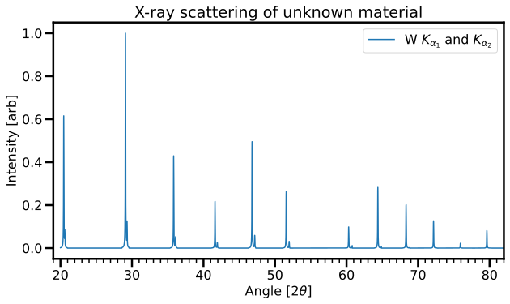
With two emission lines, one would expect to have essentially to diffraction patterns superimposed, but as there is sufficient energy separation between the two emission lines, one can resolve the two peaks (well, in simulated data). The question explicitly states that the ratio of intensities for emission from the different transitions is , meaning the peaks will be noticeably smaller. The main point is that there will be two distinct diffraction patterns, and provided one can uniquely distinguish from which emission line the peak comes, one would actually be able to better determine the crystal structure, as one effectively has double the number of peaks. This method is used more broadly, that is, not using monochromatic X-rays but rather polychromatic X-rays in order to get more information per unit diffraction, but one must know well the illuminating radiation. This is usually called "pink" beam illumination.
-
Now imagine that the experiment were altered such that only radiation were used, but a monocrystalline sample were used. What would be the difference in the recorded diffraction pattern?
If one were to use a monocrystalline sample, the diffraction pattern would have distinct Bragg spots rather than rings, but then we need to care much more about crystal orientation (it also usually very difficult to get large monocrystalline samples). The image below shows diffraction from monocrystalline silicon:
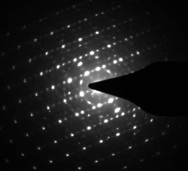
-
Unfortunately, the beautiful single crystal was dropped before it could be used, resulting in a sample that is neither amorphous nor monocrystalline, rather something between the two. How would this alter the appearance of the diffraction pattern?
With a sample between monocrystalline and amorphous, there are extended regions of order and one can imagine either the Bragg spots blurring out around the optical axis (around in polar coordinates), or the rings "sharpening up", that is still ring-like but with more intensity at the Bragg spots. The image below shows both powder and grain-oriented diffraction from aluminium:
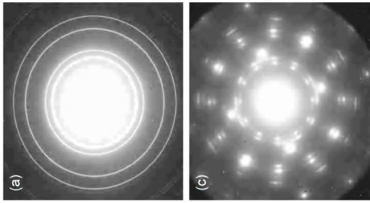
Exercise 2 - The nearly-free electron model¶
Consider an electron in a weak periodic potential in one dimension . It is natural to write the potential as where the sum is over the reciprocal lattice and assures the potential is real.
-
Explain why for k near to a Brillouin zone boundary (such as near ) the electron wavefunction should be taken to be
where is a reciprocal lattice vector such that is close to .A periodic lattice can only scatter a wave by a reciprocal lattice vector (Bragg diffraction). In the nearly free electron picture, the scattering perturbation is weak, so that we can treat the scattered wave in perturbation theory. In this case, there is an energy denominator which suppresses mixing of -vectors which have greatly different unperturbed energies. Thus, the only mixing that can occur is between two states with similar energies that are separated by a reciprocal lattice vector. Degenerate perturbation theory tells us that we should first diagonalize within the degenerate space spanned by only these two eigenstates.
-
We have seen that with the above wavefunction, the energy (that is, the eigenvalues) at this wavevector are given by where is chosen such that .
-
Give a qualitative explanation of why these two states are separated in energy by
If we consider only the and Fourier modes of the potential then we have . Assuming , then the higher energy state is the which puts the maximum amplitude of the wavefunction exactly at the maxima of the potential. Similarly, the lower energy wavefunction is the which has the minimum amplitude of the wavefunction at the maximum of the potential. In the case of the sin is the higher energy wavefunction.
-
Provide a sketch or plot of the energy as a function of in both the extended and reduced zone schemes. Note that one need not compute for all , emphasis should be on the general features of the energy spectrum.
These plots below are actually calculated by solving the eigenvalue problem as outlined in the next question for all (where the perturbation is valid, that is where the term in to second order is small compared ).
In the reduced zone scheme, one should have something like:
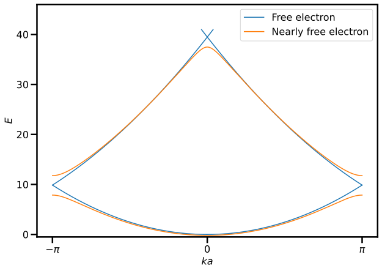
Reduced-zone scheme code
# Use colors from the default color cycle default_colors = plt.rcParams['axes.prop_cycle'].by_key()['color'] blue, orange, *_ = default_colors def energy(k, V=1): k = (k + np.pi) % (2*np.pi) - np.pi k_vals = k + 2*np.pi * np.arange(-1, 2) h = np.diag(k_vals**2) + V * (1 - np.identity(3)) return np.linalg.eigvalsh(h) energy = np.vectorize(energy, signature="(),()->(m)") fig, ax = plt.subplots(1, 1) momenta = np.linspace(-np.pi, np.pi, 400) energies = energy(momenta, 0) max_en = 41 energies[energies > max_en] = np.nan ax.plot(momenta, energies, c=blue, label = 'Free electron') energies = energy(momenta, 2) max_en = 41 energies[energies > max_en] = np.nan ax.plot(momenta, energies, c=orange, label = 'Nearly free electron') ax.set_xlabel("$ka$") ax.set_ylabel("$E$") ax.set_ylim(-.5, max_en + 5) ax.set_xticks(np.pi * np.arange(-1, 2)) ax.set_xticklabels(r"$-\pi$ $0$ $\pi$".split()) def legend_without_duplicate_labels(ax): handles, labels = ax.get_legend_handles_labels() unique = [(h, l) for i, (h, l) in enumerate(zip(handles, labels)) if l not in labels[:i]] ax.legend(*zip(*unique)) legend_without_duplicate_labels(ax) if True: plt.savefig('A-6-reduced.svg', facecolor='white', transparent=False, bbox_inches='tight') plt.show()Whereas in the extended zone scheme, one should have:
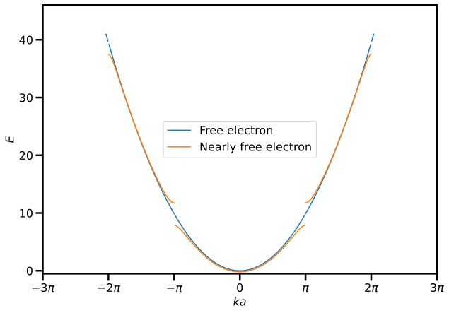
Extended-zone scheme code
fig, ax = plt.subplots(1, 1) momenta = np.linspace(-3*np.pi, 3*np.pi, 400) energies = energy(momenta, 0) max_en = 41 energies[energies > max_en] = np.nan energies[~((abs(momenta) // np.pi).reshape(-1, 1) == np.arange(3).reshape(1, -1))] = np.nan ax.plot(momenta, energies, c=blue, label = 'Free electron') energies = energy(momenta, 2) max_en = 41 energies[energies > max_en] = np.nan energies[~((abs(momenta) // np.pi).reshape(-1, 1) == np.arange(3).reshape(1, -1))] = np.nan ax.plot(momenta, energies, c=orange, label = 'Nearly free electron') ax.set_xlabel("$ka$") ax.set_ylabel("$E$") ax.set_ylim(-.5, max_en + 5) ax.set_xticks(np.pi * np.arange(-3, 4)) ax.set_xticklabels(fr"${i}\pi$".replace("1", "") if i else "$0$" for i in range(-3, 4)) legend_without_duplicate_labels(ax) if True: plt.savefig('A-6-extended.svg', facecolor='white', transparent=False, bbox_inches='tight') plt.show()
-
-
Let us look at the case where is not at the Brillouin zone boundary, but rather close to the boundary. Following the same method as used to achieve the above result, show that at the point the energy to second order in is given by
Technically the wavefunction should have a normalisation
but it is rarely the case that one is actually probing for normalisation compliance, and in any case, to maintain normalization we can insist that . Taking and both on a Brillouin zone boundary we have and , where here we have chosen the zone boundary, and we must have the reciprocal lattice vector. The Hamiltonian in question is the usual Kinetic term plus . From here, one can either use the variational method or diagonalise the Hamiltonian the degenerate space, the latter of which was done in class and is done here.
We must compute the matrix elements:
which means that me must diagonalise the matrix
Performing the diagonalisation, one finds
and the square root should be expanded and the common terms in collected to obtain the result
as required.
-
Calculate the effective mass of an electron at this wavevector
The effective mass can be obtained from
or equivalently
Exercise 3 - Fermi surfaces¶
Consider a tight binding model of atoms on a (two-dimensional) square lattice where each atom has a single atomic orbital.
-
If these atoms are monovalent, describe the shape of the Fermi surface.
The dispersion of the tight binding model is given by
and a plot of the dispersion is shown below
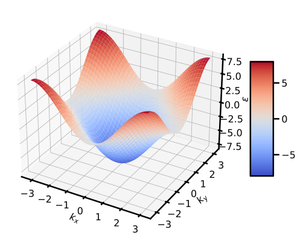
Fermi surface code
from matplotlib import cm from mpl_toolkits.mplot3d import Axes3D # Axes3D import has side effects, it enables using projection='3d' in add_subplot a = 1 t = 2 def ep(kx, ky): return -2*t * (np.cos(kx*a) + np.cos(ky*a)) fig = plt.figure() ax = fig.add_subplot(111, projection='3d') x = y = np.arange(-np.pi/a, np.pi/a, 0.05) X, Y = np.meshgrid(x, y) zs = np.array(ep(np.ravel(X), np.ravel(Y))) Z = zs.reshape(X.shape) surf = ax.plot_surface(X, Y, Z, cmap=cm.coolwarm) ax.set_xlabel(r'$k_x$') ax.set_ylabel(r'$k_y$') ax.set_zlabel(r'$\epsilon$') fig.colorbar(surf, shrink=0.5, aspect=5) if True: plt.savefig('A-6-3-tightbindingdisp.svg', facecolor='white', transparent=False, bbox_inches='tight') plt.show()which although it looks cool, it is much more useful to look at a contour plot of the energy:
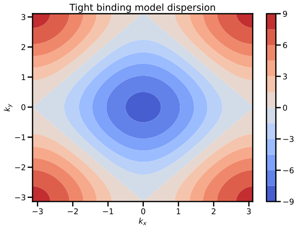
Contour plot code
fig,ax=plt.subplots(1,1) x = y = np.arange(-np.pi/a, np.pi/a, 0.05) zs = np.array(ep(np.ravel(X), np.ravel(Y))) Z = zs.reshape(X.shape) cp = ax.contourf(X, Y, Z, 11, cmap=cm.coolwarm) fig.colorbar(cp) # Add a colorbar to a plot ax.set_title('Tight binding model dispersion') ax.set_xlabel('$k_x$') ax.set_ylabel('$k_y$') if True: plt.savefig('A-6-3-tightbindingcontour.svg', facecolor='white', transparent=False, bbox_inches='tight') plt.show()If we are considering a monovalent unit cell, then the Brillouin zone is half filled:
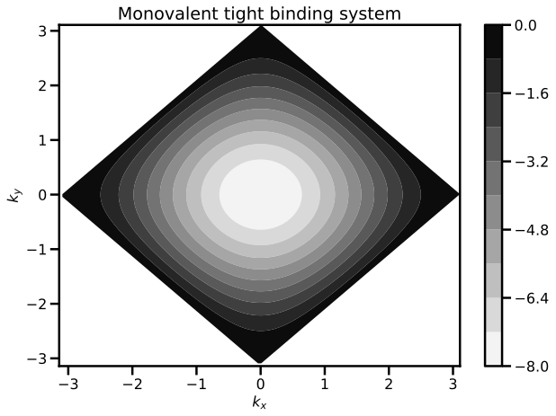
Filled cell code
fig,ax=plt.subplots(1,1) x = y = np.arange(-np.pi/a, np.pi/a, 0.1) zs = np.array(ep(np.ravel(X), np.ravel(Y))) Z = zs.reshape(X.shape) maxfilled = np.sort(zs)[int(len(zs)/2)] for z in Z: z[z>round(maxfilled)] = None cp = ax.contourf(X, Y, Z, 11, cmap='binary') fig.colorbar(cp) # Add a colorbar to a plot ax.set_title('Monovalent tight binding system') ax.set_xlabel('$k_x$') ax.set_ylabel('$k_y$') if True: plt.savefig('A-6-3-tightbindingmonovalent.svg', facecolor='white', transparent=False, bbox_inches='tight') plt.show() -
Now suppose the lattice is not square, but is instead rectangular with primitive lattice vectors of length and in the and directions respectively, where . Imagine that the hopping have a value in the direction and a value in the direction, with .
-
Given that , why would one expect ?
If one expects the hopping magnitude to be smaller in the direction since the atoms are further apart (although this is not holy, as the orbitals, such as orbitals, may not be isotropic).
-
Write an expression for the dispersion of the electronic states
Basically the same as above, but with anisotropy:
-
Suppose once again that the atoms are monovalent. What is the shape of the Fermi surface?
As an example, let us choose but for simplicity. A contour plot of this energy is given shown below:
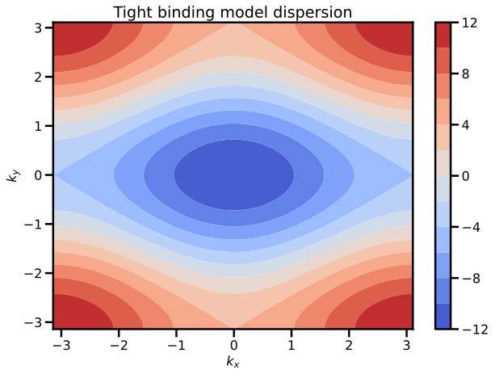
Contour plot code
a = 1 t_x = 2 t_y = 2 * t_x def ep(kx, ky): return -2*t_x*np.cos(kx*a) - 2*t_y*np.cos(ky*a) fig,ax=plt.subplots(1,1) x = y = np.arange(-np.pi/a, np.pi/a, 0.05) zs = np.array(ep(np.ravel(X), np.ravel(Y))) Z = zs.reshape(X.shape) cp = ax.contourf(X, Y, Z, 11, cmap=cm.coolwarm) fig.colorbar(cp) # Add a colorbar to a plot ax.set_title('Tight binding model dispersion') ax.set_xlabel('$k_x$') ax.set_ylabel('$k_y$') if True: plt.savefig('A-6-3-tightbindingcontour_noniso.svg', facecolor='white', transparent=False, bbox_inches='tight') plt.show()If we are considering a monovalent unit cell, then the Brillouin zone is half filled:
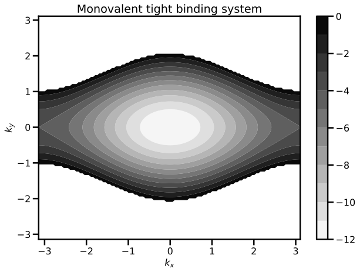
Filled cell code
fig,ax=plt.subplots(1,1) x = y = np.arange(-np.pi/a, np.pi/a, 0.1) zs = np.array(ep(np.ravel(X), np.ravel(Y))) Z = zs.reshape(X.shape) maxfilled = np.sort(zs)[int(len(zs)/2)] for z in Z: z[z>round(maxfilled)] = None cp = ax.contourf(X, Y, Z, 11, cmap='binary') fig.colorbar(cp) # Add a colorbar to a plot ax.set_title('Monovalent tight binding system') ax.set_xlabel('$k_x$') ax.set_ylabel('$k_y$') if True: plt.savefig('A-6-3-tightbindingmonovalent_noniso.svg', facecolor='white', transparent=False, bbox_inches='tight') plt.show()
-
Exercise 4 - Semiconductors: holes¶
-
In the context of semiconductor physics, what is meant by a hole and why is it useful?
A hole is the absence of an electron in an otherwise filled valence band. This is useful since instead of describing the dynamics of all the (many) electrons in the band, it is equivalent to describe the dynamics of just the (few) holes.
-
An electron near the top of the valence band in a semiconductor has energy where is in Joules, and is in . An electron is removed from a state , where is the unit vector in the direction. For a hole, calculate (including the sign)
-
the effective mass
Effective mass . So or the mass of the electron. This mass is positive in the usual convention.
-
the energy
The energy is , or about . This energy is positive (it takes energy to "push" the hole down into the fermi sea, like pushing a balloon under water).
-
the velocity
Getting the velocity (and momentum) right are tricky. First, note that the velocity of an eigenstate is the same whether or not the state is filled with an electron. It is always true that the velocity of an electron in a state is where is the electron energy. Thus the hole velocity here is negative (i.e. the velocity is in the negative ) direction.
-
the momentum
For momentum, since a filled band carries no (crystal) momentum, and for electrons crystal momentum is always , the removal of an electron leaves the band with net momentum which we assign as the momentum of the hole. Thus we obtain hole momentum which is also in the negative \hat{x} direction (this matches well to the intuition that with a positive effective mass for holes).
-
-
If there is a density of such holes all having almost exactly this same momentum, calculate the current density and its sign.
With the density of such holes, the total current density is also in the negative \hat{x} direction (noting that the charge of the hole is positive).
Exercise 5 - Semiconductor devices¶
Choose a semiconductor device of interest (a few examples are provided below, but choose anything), research it, and explain what the device is and how it functions, with an emphasis on the material covered in this course.
- Zener diode
- Laser diode
- Solar cell
- Hall effect sensor
No solution provided.